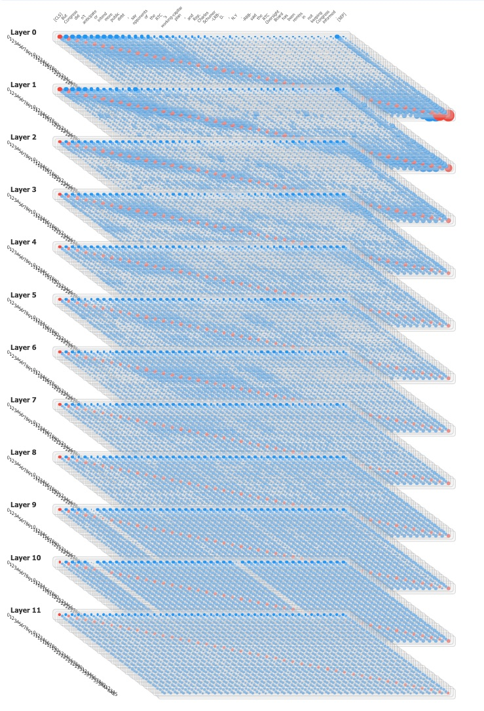

Problem
Explaining Transformers: what happens inside a layer?

- Attention maps / rollout [7, 5]: weights only
- Norm-based [6]: no ATT / MLP split
- AttnLRP [4]: a rule per operation
- IG [1]: scalar-output attribution


Explaining Transformers: what happens inside a layer?
LIG: separate IG for attention and MLP —
do they recompose the layer?

Set-to-set IG at the Multi-Head Attention (ATT) and MLP boundaries. One rule, no retraining.
ATT: tokens → heads · MLP: heads → output tokens.
Compose LRP-style: ATT × MLP per head, summed over heads.
Read on: §2 how · §4 numbers · §3 example
The composition matches best when the parts start where the whole layer does.
In practice: start attention from the target token, and the MLP from what attention outputs at that start — or zero for both.
Best within each reference block, by small margins; BERT-base, 1,700 PTB sentences (§4). Agreement between attributions, not model behaviour; residual route omitted.

PRIORIG [1] integrates gradients along the straight path $z(a)=z(0)+a\,(z-z(0))$ from a baseline $z(0)$ to the input $z$:
The baseline sets what each contribution is measured against.
Set-to-set IG (not standard in prior IG applications) attributes output token $j$'s change ($L_2$, §5) to input tokens (ATT) or heads (MLP):
Baseline = start ($a=0$); all inputs move together to their actual values ($a=1$).
Whole-layer IG (no ATT / MLP split) · Zero baseline · one PTB sentence (qualitative). Columns: inputs; rows: outputs; size: |contribution|; red: self; blue: others. Here, layer 0 is near-diagonal; layers 9–11 span the sentence.

Compositional gap: $L_2$ distance between whole-layer and composed attribution vectors (over input tokens; per sentence, layer, output token). The LRP-style composition [2, 3] is not an IG chain rule (no residual route), so the two need not agree.
Setup. BERT-base-uncased · 1,700 PTB dev sentences [9] · $m=32$ steps. Top 3 per reference; bold: best; compare only within blocks.
| Whole-layer baseline (reference) | Composed: ATT | MLP baseline | $L_2$ ↓ |
|---|---|---|---|
| ITBInput Token Base: all tokens start at $z_j$ | ITB | ATTITBa=0 | 0.305 |
| ITB-zeroRatio | ATTITBa=0 | 0.312 | |
| ITB-mapRatio | ATTITBa=0 | 0.318 | |
| Zerozero vector $\mathbf{0}$ | Zero | Zero | 0.736 |
| ITB-zeroRatio | Zero | 0.744 | |
| Zero | ATTITBa=0 | 0.749 |
ITB-zeroRatio / -mapRatio: ITB's zero self-score replaced by the Zero-baseline self-score / the attention weight $\alpha_{j,j}$; total preserved.
Best MLP baseline: ATTITBa=0 under ITB (for every ATT baseline tested); Zero under Zero.
Per input token or head $r$: sum IG over its dimensions, then normalize by the total change (signed):
| Method | Limitation / LIG’s gain |
|---|---|
| PRIORAttention maps [7]; rollout [5] | ignore values and MLP |
| PRIORNorm-based [6] | no ATT / MLP split |
| PRIORAttnLRP [4] | a rule per operation |
| OURSLIG | one rule (IG); splits and composes |
[1] Sundararajan+ ICML 2017 · [2] Bach+ PLOS ONE 2015 · [3] Montavon+ LRP overview 2019 · [4] Achtibat+ (AttnLRP) ICML 2024 · [5] Abnar & Zuidema ACL 2020 · [6] Kobayashi+ EMNLP 2020 · [7] Jain & Wallace NAACL 2019 · [8] Sturmfels+ Distill 2020 · [9] Marcus+ Treebank-3, LDC 1999 · [10] Syed+ BlackboxNLP 2024 · [11] Hanna+ COLM 2024. Supported by JSPS KAKENHI JP26K02989, JP26K23861, JP25K24611. Project page: https://eightsuzuki.github.io/layer-wise-integrated-gradients/